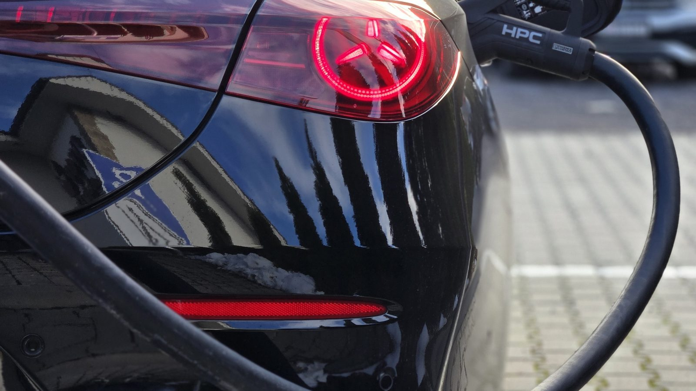

Batéria nepotrebuje, aby ste jej podriaďovali život. Moderné autá majú dobrý systém riadenia batérie, ktorý ju chráni pred prehriatím, prebitím aj hlbokým vybitím. Stačí nastaviť limit nabíjania a potom normálne jazdiť. Keď potrebujete nabiť na 100 % alebo trikrát za týždeň zastaviť na rýchlonabíjačke, urobte to bez výčitiek. Rady nižšie sú na to, ako batérii pomôcť, nie zoznam pravidiel, ktoré treba stresovo dodržiavať.
Dva typy batérií
V autách pre európsky trh má väčšina elektromobilov batériu NMC (nikel, mangán, kobalt). Má vysokú hustotu energie, takže sa do auta zmestí väčší dojazd. Druhým rozšíreným typom je LFP (lítium-železo-fosfát). Celosvetovo už prevláda, v Európe tvorí zhruba desatinu. Stretnete ju napríklad pri Tesle Model 3 a Model Y v základných verziách so zadným pohonom, pri väčšine áut BYD, pri MG4 so štandardnou batériou alebo pri novej Dacii Spring. Je odolnejšia voči častému nabíjaniu do plna.
Pribúdajú aj ďalšie typy. LMFP je vylepšená LFP s mangánom a pre majiteľa sa správa podobne. Sodíkovo-iónové batérie sa od roku 2026 objavujú v prvých sériových autách v Číne, v Európe sa zatiaľ nepredávajú.
Typ batérie nájdete v návode, v servisnej dokumentácii alebo vám ho povie predajca. Pri autách od nás ho uvádzame pri odovzdaní.
Do koľkých percent nabíjať
Batéria NMC
Na bežné jazdy nabíjajte do 80 % a dlhodobo nenechávajte batériu pod 20 %. Nad 80 % sa aj tak nabíja výrazne pomalšie.
Pred dlhou cestou nabite na 100 %, ale tesne pred odchodom. Batéria by nemala stáť nabitá do plna niekoľko dní, najmä v lete.
Batéria LFP
Výrobcovia odporúčajú nabíjať na 100 %, aspoň raz týždenne. Batéria to znáša dobre a auto si pri plnom nabití správne kalibruje ukazovateľ stavu nabitia. Pri LFP by bez toho mohlo ukazovať nepresný dojazd.
Limit nabíjania zvyčajne viete nastaviť v aute alebo v jeho aplikácii. Auto sa pri 80 % samo zastaví.
Rýchlonabíjanie
Občasné nabíjanie na rýchlonabíjačke batérii neublíži, elektronika ju chráni a riadi teplotu aj prúd. Ak však môžete nabíjať doma, nerobte z rýchlonabíjania každodenný štandard. Batérie LFP znášajú rýchlonabíjanie lepšie ako NMC.
Čo batérii škodí najviac
- Dlhé státie pri plnom nabití v horúčave, napríklad dva týždne na letisku so 100 %.
- Dlhé státie s takmer vybitou batériou. Ak auto odstavujete na dlhšie, nechajte ho okolo 50 %.
- Extrémne teploty. Ak je to možné, parkujte v lete v tieni a v zime v garáži.
Bežné jazdenie, nabíjanie cez noc a občasná cesta na rýchlonabíjačke batériu nezničia.
Ako dlho batéria vydrží
| Údaj | Typicky |
|---|---|
| Záruka výrobcu na batériu | 8 rokov alebo 160 000 km |
| Strata kapacity ročne | 1 – 2 % |
| Kapacita po ôsmich rokoch | väčšina áut okolo 80-85 % |
Záruka výrobcu sa vzťahuje na pokles kapacity pod stanovenú hranicu, najčastejšie 70 %. Podmienky sa líšia podľa značky, pri kúpe ojazdeného auta si overte, do kedy záruka platí.
Stav batérie pri kúpe ojazdeného auta
Zostávajúcu kapacitu batérie oproti novej udáva hodnota SoH (State of Health). Ukazovateľ dojazdu v aute ju neprezradí, pretože ho ovplyvňuje štýl jazdy aj teplota.
Spoľahlivo ju zmeria certifikovaný test batérie, napríklad Aviloo. Pri kúpe ojazdeného elektromobilu si ho vždy pýtajte. Bez neho kupujete najdrahší diel auta naslepo. Základné informácie ukáže aj lacnejšia OBD diagnostika.
Časté otázky
Do koľkých percent nabíjať elektromobil?
Pri batérii NMC na bežné jazdy do 80 %, pred dlhou cestou na 100 % tesne pred odchodom. Pri batérii LFP výrobcovia odporúčajú nabíjať na 100 % aspoň raz týždenne.
Koľko rokov vydrží batéria elektromobilu?
Väčšina batérií má po ôsmich rokoch viac ako 80 % pôvodnej kapacity. Typická strata je jedno až dve percentá ročne. Výrobcovia dávajú na batériu záruku spravidla práve 8 rokov alebo 160 000 km.
Škodí rýchlonabíjanie batérii?
V rozumnej miere nie. Ak sa ale dá, nabíjajte bežne doma z wallboxu a rýchlonabíjačky používajte na dlhších cestách. Batérie LFP znášajú časté rýchlonabíjanie lepšie.
Ako zistím stav batérie pri kúpe ojazdeného elektromobilu?
Certifikovaným testom batérie, ktorý zmeria jej zostávajúcu kapacitu (SoH). Ukazovateľ dojazdu v aute na to nestačí.
Každé auto s testom batérie
Ku každému elektromobilu v našej ponuke robíme certifikovaný test batérie. Skutočnú kapacitu poznáte skôr, než auto kúpite, a pri odovzdaní vám povieme aj typ batérie a ako ju nabíjať.
 Wallbox doma
Wallbox doma